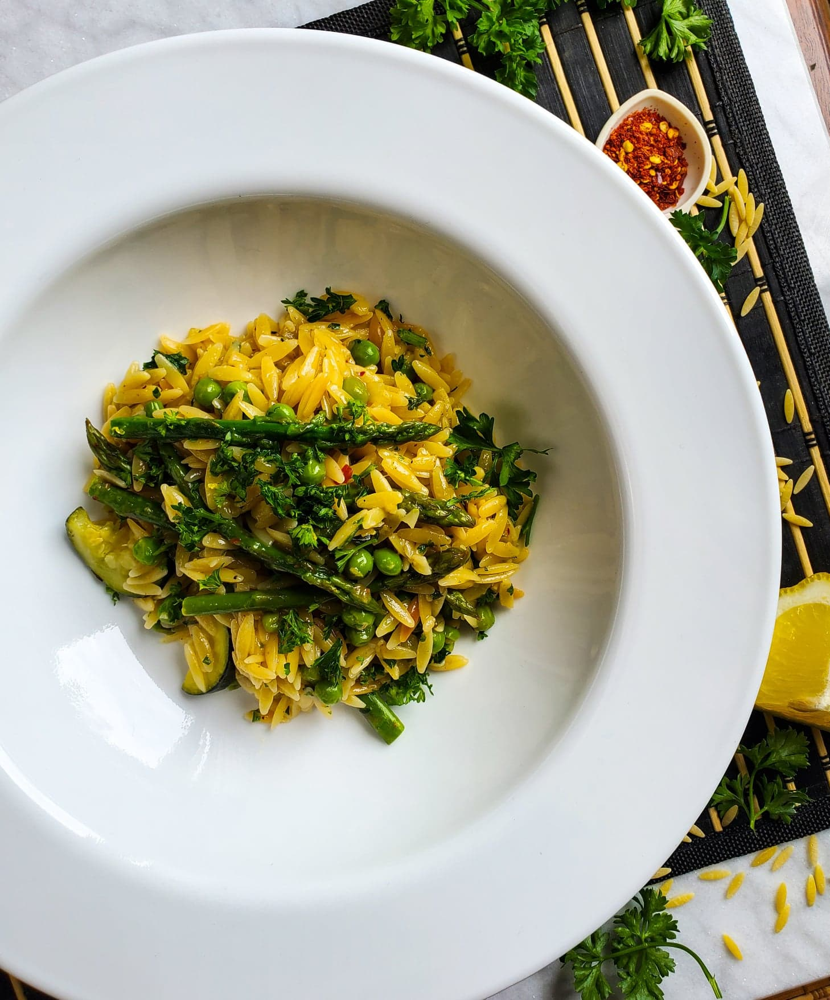

Spring risotto

Description
I thought I had Arborio rice but I obviously did not. Orzo pasta makes a delightful risotto with help from spring veggies like asparagus and peas. For service, garnish with some freshly grated Grana Padano cheese and chopped parsley.
Ingredients
- 2 ½ cups vegetarian chicken-flavored broth
- 2 cups low-sodium vegetable broth
- 3 tablespoons unsalted butter
- 1 tablespoon extra-virgin olive oil
- ½ medium yellow onion, diced
- ¾ teaspoon red pepper flakes
Steps
- Pour vegetarian chicken broth and vegetable broth into a medium saucepan over over medium heat; bring to a boil. Reduce heat to simmer and cover until needed.
- Melt butter and oil together in a 12-inch skillet over medium heat. Add onion, pepper flakes, and a pinch of sea salt and pepper. Cook and stir for about 4 minutes before adding the zucchini and another pinch of sea salt. Stir and continue to cook for about 3 minutes. Next, stir in the dry orzo pasta and continue to cook, stirring often, for 5 minutes.